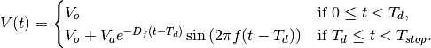

This module implements high level elements built on Spice elements.
Bases: PySpice.Spice.HighLevelElement.Sinusoidal
Bases: PySpice.Spice.BasicElement.VoltageSource
This class implements a pulse waveform.
Nomenclature:
| V1 | initial_value |
| V2 | pulsed_value |
| Pw | pulse_width |
| Td | delay_time |
| Tr | rise_time |
| Tf | fall_time |
Spice Syntax:
PULSE ( V1 V2 Td Tr Tf Pw Period )
A single pulse so specified is described by the following table:
| Time | Value |
| 0 | V1 |
| Td | V1 |
| Td+Tr | V2 |
| Td+Tr+Pw | V2 |
| Td+Tr+Pw+Tf | V1 |
| Tstop | V1 |
Note: default value in Spice for rise and fall time is the simulation transient step, pulse width and period is the simulation stop time.
Public Attributes:
delay_time
fall_time
initial_value
period
pulse_width
pulsed_value
rise_time
Bases: PySpice.Spice.BasicElement.VoltageSource
This class implements a sinusoidal waveform.
The shape of the waveform is described by the following formula:

Spice syntax:
SIN ( Voffset Vamplitude Freq Tdelay DampingFactor )
Public Attributes:
amplitude
damping_factor
dc_offset
delay
frequency
offset